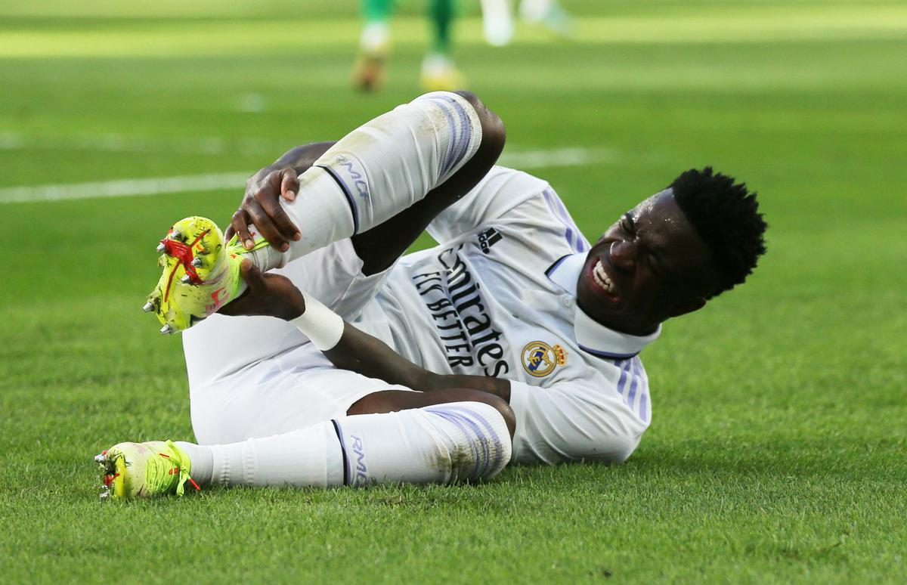
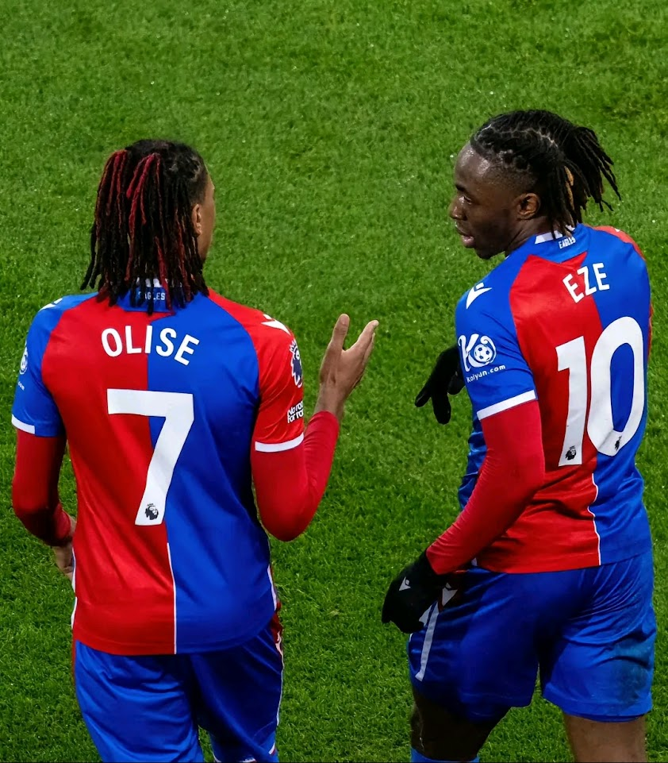
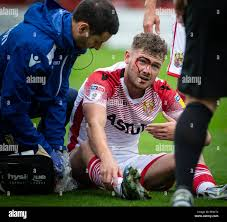
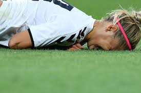
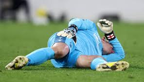

You are very welcomed and most appreciated for using our website for your benefit The organisaton was founded on the 20th of January 2025. The main aim for coming up with the specific wesite is to help all players and their mentors have have a good and easy time when handling their injuries
We are lucky as an organisation to inform you that we have made significant progress. We are lucky to have had asignificant support system that helped us do overcome some of our financial iisues. This has really helped us navigate through payrolls in the organisation
At Osbon Sports Organisation we are really committed eo give our clients the best that they would want to have so that they can start their recovery process as early as possible and go through it with less pain or difficulty but a sure healing process. We are proud to say we have one of worlds best personal
Here are some of the sports we cater for interms of the injury and inline with the period it may take for the injury to be overcome or for the injury to be fully maintained or treated
| TYPE OF SPORT | TYPE OF INJURY | TIME TO OVERCOME |
|---|---|---|
| Football | Torn ACL | 9 Mounths |
| Football | Torn Muscle | 6 Mounths |
| Football | Dislocations | 2 Mounths |
| Golf | Wrist Dislocation | 1 year |
| Golf | Back Problems | 2 Years |
| Rugby | Brocken clavical | 1.5 Years |
| Rugby | Rib Brackage | 9 mounths |
| Rugby | Concasion | 1 Mounth |
| Bascket Ball | Calf Sprin | 4 Mounths |
| Bascket Ball | Swollen Thumb | 2 Weeks |
| Formular One | Neck Sprin | 7 Mounths |
| Formular One | Sholder Dislocation | 5 Mounths |
We have managed to help professional players outside the country overcome their tough periods during injury phase Here are some     